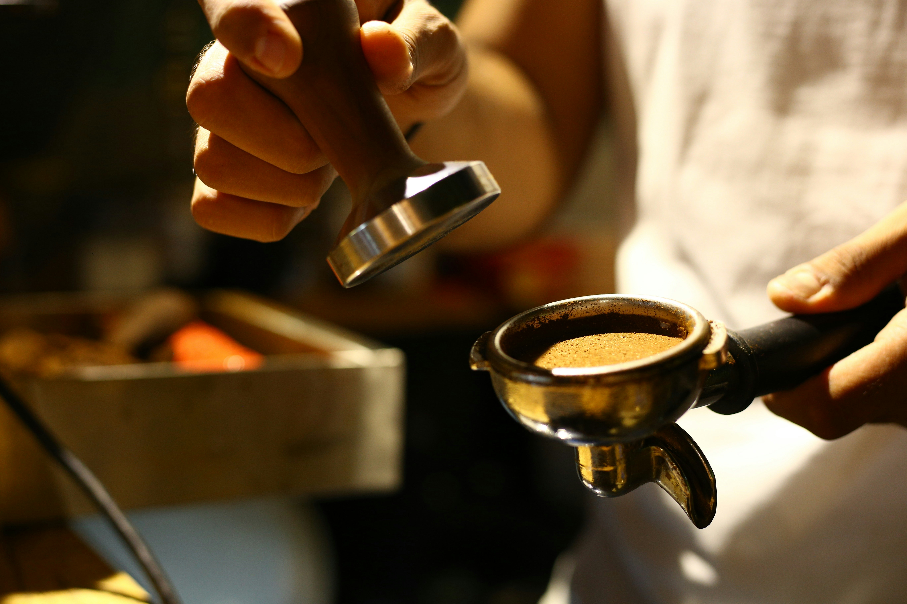

O aroma do café fresco torrado artesanalmente
Grãos selecionados na fazenda, torrados em pequenos lotes e moídos na hora para criar a xícara perfeita para o seu dia.
Grãos selecionados na fazenda, torrados em pequenos lotes e moídos na hora para criar a xícara perfeita para o seu dia.
Fundada em 2024 por dois baristas apaixonados, a nossa cafeteria nasceu com um propósito simples: transformar o hábito de tomar café em uma experiência sensorial inesquecível.
Trabalhamos exclusivamente com grãos 100% Arábica de cultivo sustentável, comprados diretamente de pequenos produtores brasileiros. Cada lote passa por um processo rigoroso de torrefação artesanal para destacar as notas naturais de chocolate, caramelo e frutas vermelhas.

Estamos abertos todos os dias para te servir o melhor café artesanal da cidade. Venha conhecer nosso espaço ou envie uma mensagem!
📍 Endereço: Rua dos Baristas, 404 — Bairro Alto, São Paulo - SP
🕒 Horários: Seg a Sáb: 08h às 20h | Dom: 09h às 16h
📸 Redes Sociais: @cafe.artesanal